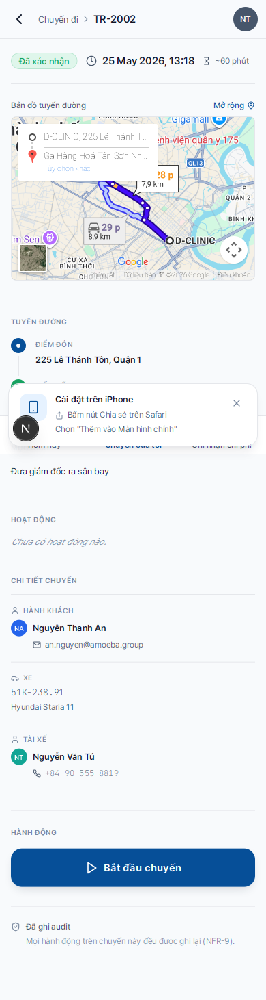
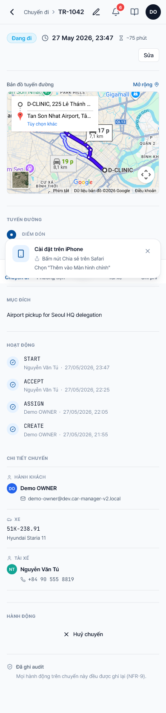

Bắt đầu và kết thúc chuyến
- Trước đó
- Chuyến phải ở trạng thái "Đã xác nhận" (xem Xác nhận chuyến)
- Thời gian
- ~10 giây mỗi lần
- Tự động ghi nhận
- Thời điểm + số odometer + người thao tác
Hai thao tác này tạo nên khung thời gian thực cho chuyến đi — dữ liệu được dùng cho báo cáo km, tính phí, và tự động đồng bộ km với chu kỳ bảo dưỡng.
Bắt đầu chuyến (xuất phát)
Trước khi rời chỗ đậu xe, mở app, vào chi tiết chuyến đã xác nhận.
Cuộn xuống dưới cùng, bấm nút "▶ Bắt đầu chuyến" (màu xanh, full width).

Hệ thống ghi nhận: thời điểm bắt đầu = thời điểm bạn bấm nút. Trạng thái chuyến chuyển sang "Đang đi". Banner xanh trên Hôm nay sẽ thay thế bằng chuyến này.
Kết thúc chuyến (đến nơi)
Sau khi đỗ xe tại điểm đến, mở app, vào chi tiết chuyến đang chạy (banner xanh trên Hôm nay).
Bấm nút "⏹ Kết thúc chuyến" (xanh dương) ở dưới cùng.

Trạng thái chuyến chuyển sang "Đã hoàn tất". Thời điểm kết thúc được ghi nhận.
Số km (odometer) được cập nhật khi nào?
Hiện tại hệ thống đang dùng số km trên hồ sơ xe — tự động cộng dồn theo chuyến. Trong các phiên bản tới, bạn sẽ được yêu cầu nhập số km hiển thị trên đồng hồ xe tại 2 thời điểm:
- Bắt đầu: ghi số km ban đầu (để tính tổng km chuyến)
- Kết thúc: ghi số km kết thúc (để cộng vào odometer xe)
Đừng quên bấm Kết thúc. Nếu để chuyến ở trạng thái "Đang đi" qua đêm, Admin sẽ nhận cảnh báo và phải chốt chuyến tay — gây sai lệch giờ làm việc của bạn trong báo cáo.
Lỡ tay bấm sai?
| Tình huống | Cách xử lý |
|---|---|
| Bấm "Bắt đầu" nhưng chưa xuất phát | Liên hệ Admin để hủy + tạo lại — bạn không tự sửa được |
| Quên bấm "Kết thúc", đã về nhà | Vẫn bấm "Kết thúc" được; thời điểm sẽ là lúc bạn bấm, không phải lúc đến nơi thực sự — ghi chú vào trường "Ghi chú" để Admin biết |
| Bấm "Kết thúc" rồi mới phát hiện đi tiếp | Tạo chuyến mới hoặc liên hệ Admin — không thể "khởi động lại" chuyến đã hoàn tất |